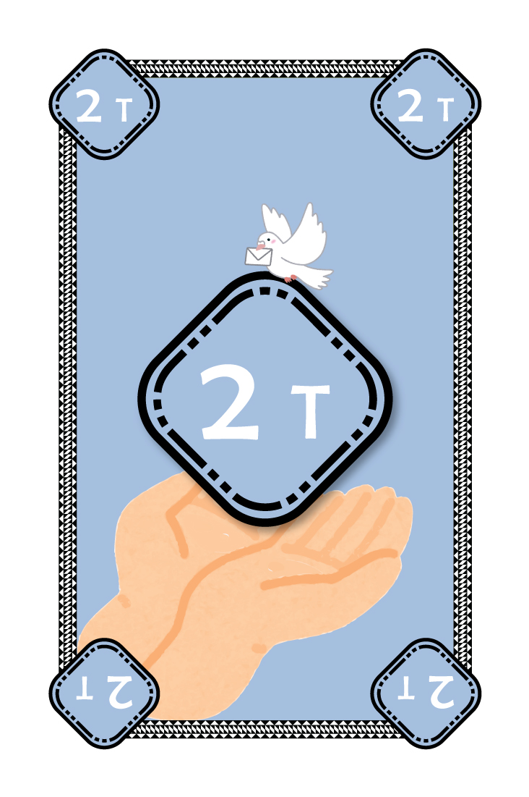
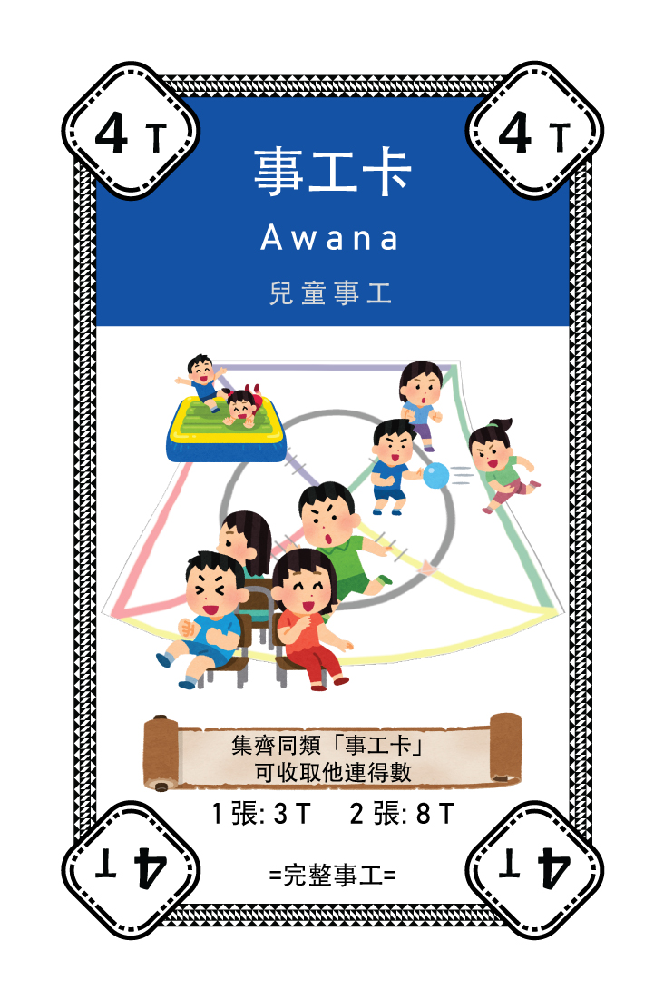
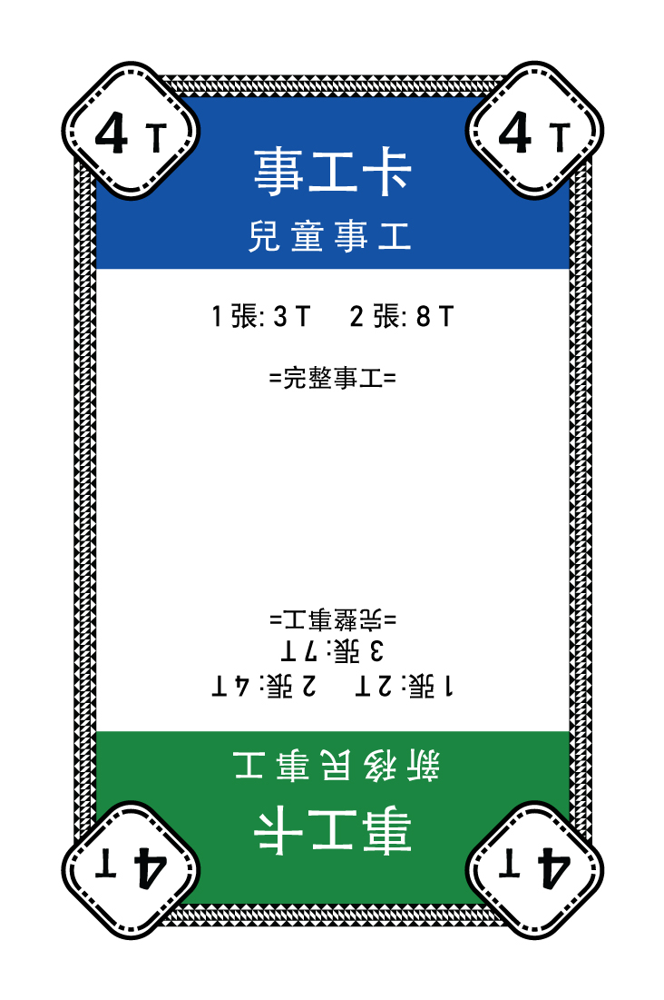
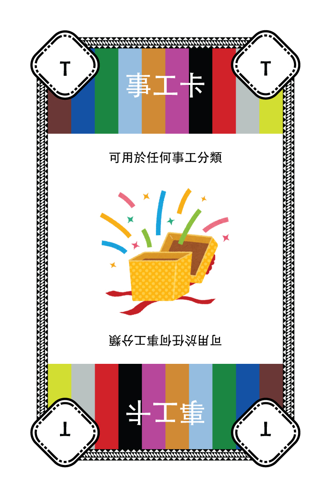
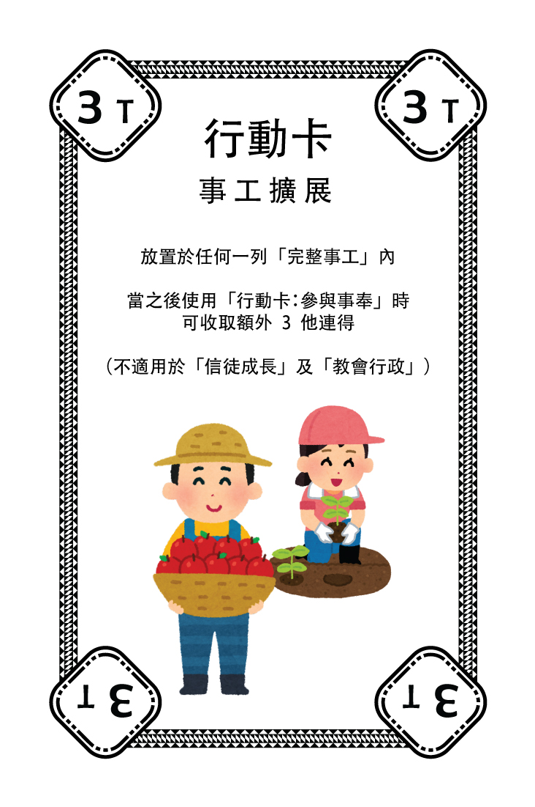
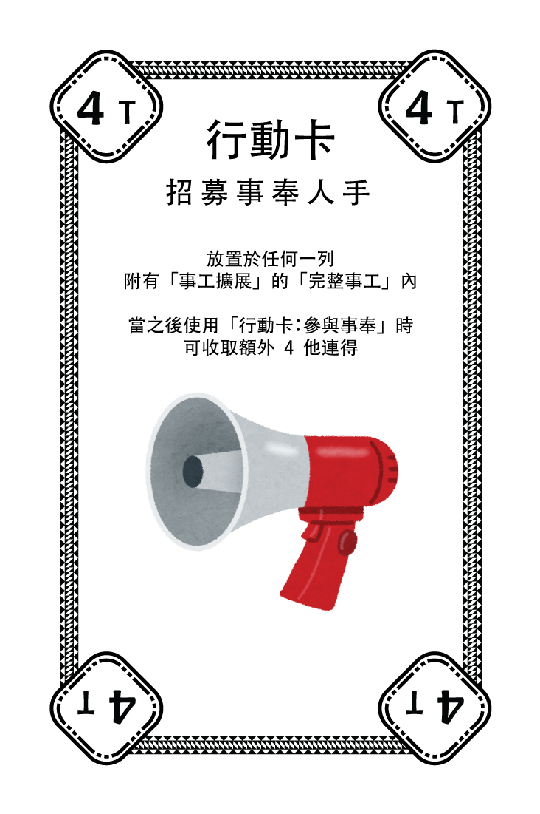
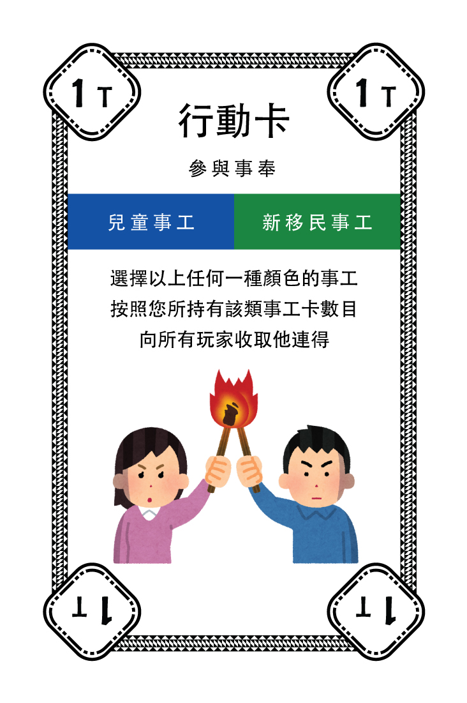
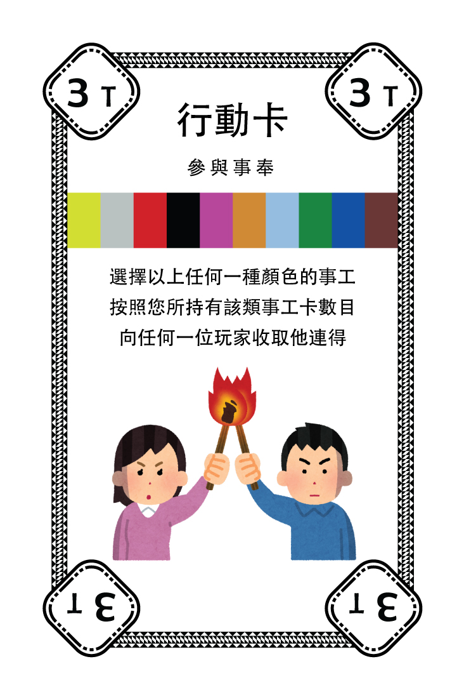

本遊戲的規則與經典「富翁 - Deal」交易卡牌遊戲一致。以下是卡牌種類的對應:
| Cash | Property | House/Hotel | Actions | |
| 本遊戲: | 他連得 | 事工卡 | 行動卡: 事工擴展/招募事奉人員 | 行動卡 |
| 本遊戲 | |
|---|---|
| Cash | 他連得 |
| Property | 事工卡 |
| House/Hotel | 行動卡: 事工擴展/招募事奉人員 |
| Actions | 行動卡 |
當輪到你的回合時, 你會完成以下動作:
若然在金庫和祭壇也不足以支付被收取的「他連得(T)」時, 沒有任何後果, 該行動及回合繼續進行, 你亦可繼續遊戲。
當任何一位玩家最先集齊三列「完整事工」時, 遊戲結束並由該名玩家獲勝。
| 他連得(T) | |
|---|---|
|  | 卡牌例子說明: 此卡牌價值2「他連得(T)」 |
| 事工卡 | |
|---|---|
|  | 事工卡 - 單一類別 卡牌例子說明: 此卡牌價值4「他連得(T)」, 屬於事工類別=兒童事工, 集齊2張卡牌以組成「完整事工」。若然只有一張卡牌, 只可收取3「他連得(T)」 |
|  | 事工卡 - 雙類別 此卡可選擇與「兒童事工」或「新移民事工」組成「完整事工」列。此卡牌價值4「他連得(T)」。 |
|  | 事工卡 - 任何類別 此卡可選擇與任何事工種類組成「完整事工」列。此卡牌沒有任何「他連得(T)」價值。 |
| 行動卡 | |
|---|---|
|  | 事工擴展 卡牌例子說明: 如果放於兒童事工的「完整事工」列上, 總收取他連得數目將為 8(事工卡2張) + 3(本卡牌) = 11「他連得(T)」。此卡牌價值3「他連得(T)」。 |
|  | 招募事奉人手 卡牌例子說明: 如果放於兒童事工的「完整事工」+「行動卡:事工擴展」列上, 總收取他連得數目將為 8(事工卡2張) + 3(事工擴展) + 4(本卡牌) = 15「他連得(T)」。此卡牌價值4「他連得(T)」。 |
|  | 參與事奉 - 雙類別 卡牌例子說明: 對應置於你祭壇上相同類別的事工卡, 向其他玩家收取「他連得(T)」。例如你的祭壇上有1張新移民事工, 使用此卡你可收取2「他連得(T)」。此卡牌價值1「他連得(T)」。 |
|  | 參與事奉 - 任何類別 卡牌例子說明: 與「參與事奉 - 雙類別」同樣功能, 使用時卻不限事工類別。此卡牌價值3「他連得(T)」。 |
| 其他「行動卡」則在使用時按卡上的指示去執行。 | |
祭壇: 放置事工卡 | 金庫: 放置「他連得」或當作他連得使用的行動卡牌 | 棄牌區: 放置於回合中使出的行動卡
近年來, 疫情、移民潮、國際及本土劇變的情況也對教會帶來不少衝擊。
希望藉以此套卡牌, 記載這時代中弟兄姊妹所經歷的事情, 日後成為恩典的記號。同時亦藉此遊戲, 提供新舊肢體間的交流/互動的機會, 讓最近加入的弟兄姊妹更此認識教會各項事工。
本遊戲為參與CBM Active in Mission2023的籌款項目, 以經典著名「富翁」遊戲作為藍本, 重新編著卡牌內容而成。
馬太福音25:29 「因為凡有的，還要加給他，叫他有餘；沒有的，連他所有的也要奪過來。」
上帝所賜我們生命中各種的"Talent"(才幹/才能), 就如在比喻中主人託付僕人的「他連得」(銀子)一樣, 我們也得要成為善良又忠心的僕人。
跟那套經典「富翁」遊戲不同, 此遊戲鼓勵的不是囤積與謀取私利。我們事奉的恩賜, 在困難中的恩典也由上帝親手施予, 並彰顯於信徒群體的彼此支持和配搭當中。
事奉和事工不是我們所擁有, 而是上帝在祂恩典中讓我們有份參與。不論崗位如何, 規模多大, 上帝所悅納的並不如世俗以積效或數據來衡量。
嘗試以截然不同的角度, 體驗一下在上帝供應和帶領下的事奉歷程吧!
在「兒童事工-Citrus」卡牌中出現英文拼字錯誤, 製作方將於2024年首季通過教會向贊助者補發更正的卡牌。 其他關於產品質素的問題, 可以電郵聯絡製作方。